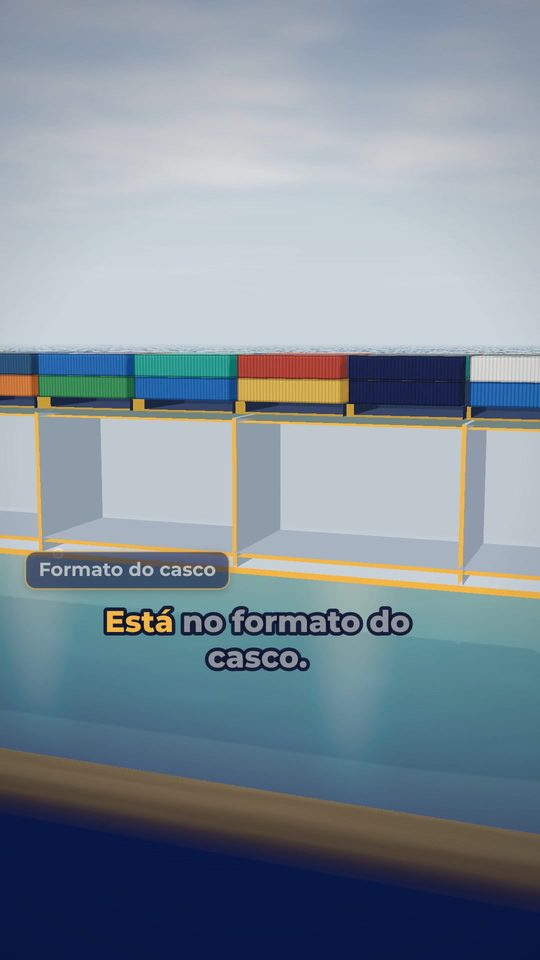
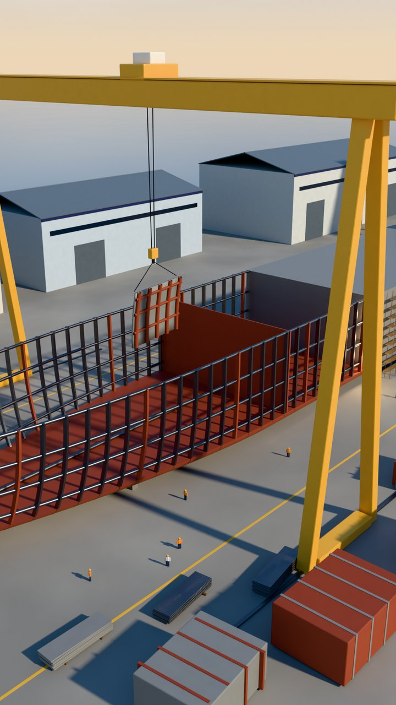
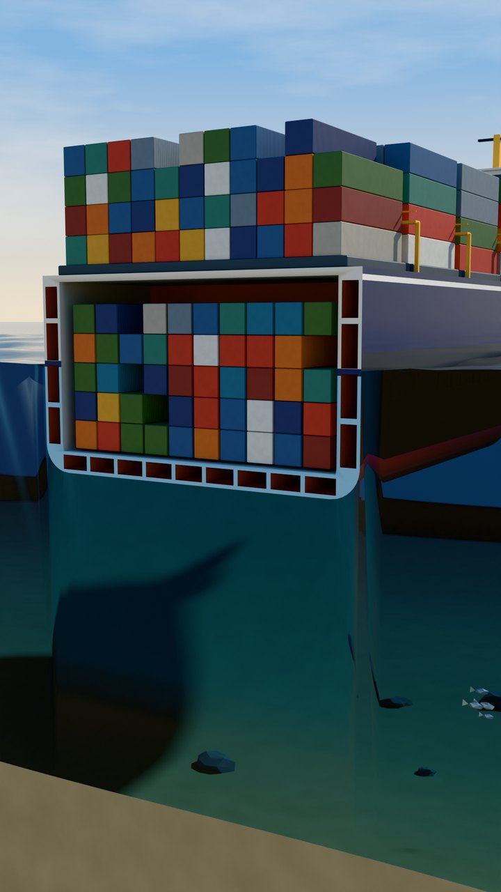
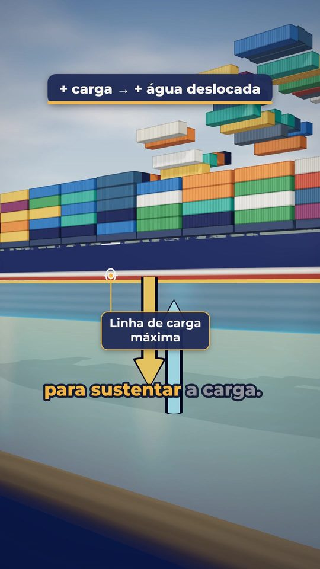
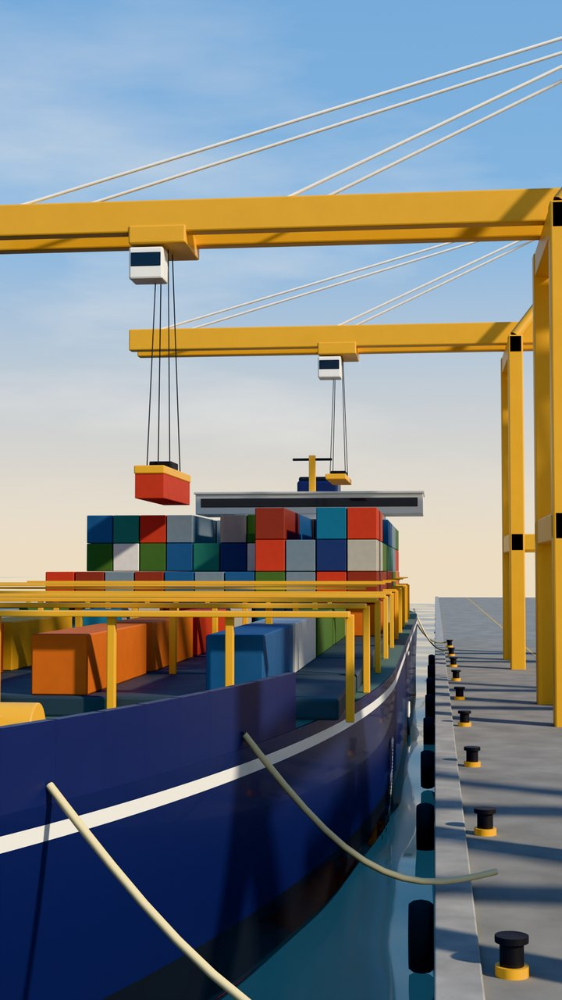

<title>Navio v2 · Revisão</title>
<meta name="claude:viewport-fit-sides" content="cover">
<link rel="preconnect" href="https://fonts.googleapis.com">
<link rel="stylesheet" href="https://fonts.googleapis.com/css2?family=Montserrat:wght@500;600;700;800;900&family=Inter:wght@400;500;600&display=swap">
<style>
/* Layout: coluna de leitura com faixas de comparação lado a lado (v1 | v2) por quadro; cores da marca do canal. */
:root{
  --fundo:#f4f2ea; --superficie:#fbfaf5; --texto:#1c2342; --suave:#565d78; --linha:#d9d6c9;
  --marca:#202B57; --amarelo:#F3B544; --amarelo-texto:#8a5a00; --ok:#2f7a55; --alerta:#a3451f;
  --chip-ok:#e3f1e8; --chip-alerta:#f7e4da; --chip-pend:#f6ecd2;
  --display:'Montserrat',system-ui,sans-serif; --corpo:'Inter',system-ui,sans-serif;
}
@media (prefers-color-scheme: dark){:root:not([data-theme="light"]){
  --fundo:#141a35; --superficie:#1b2246; --texto:#eef0f7; --suave:#a8aecb; --linha:#2c3566;
  --marca:#F6F4EC; --amarelo:#F3B544; --amarelo-texto:#F3B544; --ok:#7fd1a5; --alerta:#f0a07c;
  --chip-ok:#1d3a35; --chip-alerta:#3d2622; --chip-pend:#3a3220; color-scheme:dark}}
:root[data-theme="dark"]{
  --fundo:#141a35; --superficie:#1b2246; --texto:#eef0f7; --suave:#a8aecb; --linha:#2c3566;
  --marca:#F6F4EC; --amarelo:#F3B544; --amarelo-texto:#F3B544; --ok:#7fd1a5; --alerta:#f0a07c;
  --chip-ok:#1d3a35; --chip-alerta:#3d2622; --chip-pend:#3a3220; color-scheme:dark}
body{background:var(--fundo);color:var(--texto);font:16px/1.6 var(--corpo)}
.pagina{max-width:1080px;margin:0 auto;padding-block:40px 72px;padding-left:max(16px,env(safe-area-inset-left,0px));padding-right:max(16px,env(safe-area-inset-right,0px));display:grid;gap:56px}
h1,h2,h3{font-family:var(--display);text-wrap:balance;margin:0;line-height:1.15}
h1{font-size:clamp(28px,5vw,44px);font-weight:900;color:var(--marca);letter-spacing:-.5px}
h2{font-size:clamp(21px,3vw,28px);font-weight:800;color:var(--marca)}
h3{font-size:18px;font-weight:700}
p{margin:0;max-width:68ch}
.rotulo{font:700 12px/1 var(--display);letter-spacing:.12em;text-transform:uppercase;color:var(--amarelo-texto)}
header{display:grid;gap:14px}
.estado{display:flex;flex-wrap:wrap;gap:8px}
.chip{font:600 13px/1 var(--display);padding:7px 11px;border-radius:999px;background:var(--chip-pend)}
.chip.ok{background:var(--chip-ok);color:var(--ok)} .chip.alerta{background:var(--chip-alerta);color:var(--alerta)}
section{display:grid;gap:22px}
.quadro{display:grid;gap:14px;padding-top:22px;border-top:1px solid var(--linha)}
.quadro .cab{display:flex;flex-wrap:wrap;gap:6px 16px;align-items:baseline}
.quadro .num{font:900 15px/1 var(--display);color:var(--amarelo-texto)}
.par{display:grid;grid-template-columns:minmax(0,1fr) minmax(0,1.35fr);gap:14px;align-items:start}
figure{margin:0;display:grid;gap:8px;min-width:0}
figure img{width:100%;max-width:100%;aspect-ratio:9/16;object-fit:cover;border-radius:10px;display:block;background:var(--linha)}
figure.v2 img{box-shadow:0 0 0 3px var(--amarelo)}
figcaption{font:600 13px/1.3 var(--display);color:var(--suave)}
figure.v2 figcaption{color:var(--amarelo-texto)}
.nota{font-size:15px;color:var(--suave)}
.grade{display:grid;grid-template-columns:repeat(auto-fit,minmax(min(100%,300px),1fr));gap:12px}
.item{background:var(--superficie);border:1px solid var(--linha);border-radius:10px;padding:16px;display:grid;gap:8px;align-content:start;min-width:0}
.item .linha-cab{display:flex;justify-content:space-between;gap:10px;align-items:center}
.tabela{overflow-x:auto} table{border-collapse:collapse;width:100%;font-size:14.5px;font-variant-numeric:tabular-nums}
th,td{text-align:left;padding:9px 10px;border-bottom:1px solid var(--linha);vertical-align:top}
th{font:700 12px/1.2 var(--display);letter-spacing:.06em;text-transform:uppercase;color:var(--suave)}
.destaque{background:var(--marca);color:var(--fundo);border-radius:14px;padding:24px;display:grid;gap:14px}
.destaque h2{color:var(--fundo)} .destaque p,.destaque li{color:var(--fundo)}
.destaque ol{margin:0;padding-left:1.2em;display:grid;gap:8px}
.assinatura{display:grid;grid-template-columns:minmax(0,260px) minmax(0,1fr);gap:20px;align-items:center}
code{font-size:.9em;background:var(--superficie);border:1px solid var(--linha);padding:1px 5px;border-radius:5px}
@media (max-width:620px){.par{grid-template-columns:1fr 1fr}.assinatura{grid-template-columns:1fr}}
</style>

<main class="pagina">
  <header>
    <span class="rotulo">De Olho no Invisível · Episódio 01 · reformulação</span>
    <h1>Como um navio de aço consegue flutuar?</h1>
    <p>Etapas A (auditoria) e B (nova direção visual e teste de voz). Os cinco quadros abaixo saíram do motor que fará o episódio, Blender 5.1 com Cycles, em 1080×1920, sem retoque. À esquerda de cada um está o quadro equivalente da versão rejeitada.</p>
    <div class="estado">
      <span class="chip ok">5 quadros renderizados</span>
      <span class="chip ok">Assinatura com o mascote oficial</span>
      <span class="chip alerta">Voz: aguardando chave da ElevenLabs</span>
      <span class="chip">Referência analisada por quadros estáticos</span>
      <span class="chip">Aguardando sua aprovação</span>
    </div>
  </header>

  <section aria-labelledby="t-quadros">
    <h2 id="t-quadros">Quadros de referência: v1 × v2</h2>

    <article class="quadro">
      <div class="cab"><span class="num">Quadro 1</span><h3>Bloco de aço afundando</h3></div>
      <div class="par">
        <figure><figcaption>v1 · Three.js</figcaption></figure>
        <figure class="v2"><figcaption>v2 · Blender / Cycles</figcaption></figure>
      </div>
      <p class="nota">Plano meio dentro, meio fora d'água, junto ao cais do estaleiro. O bloco é aço escovado e chanfrado; há bolhas, cáusticas, raios de luz, limo no cais e o pórtico amarelo ao fundo, que anuncia a construção.</p>
    </article>

    <article class="quadro">
      <div class="cab"><span class="num">Quadro 2</span><h3>Estaleiro com o casco em construção</h3></div>
      <div class="par">
        <figure><figcaption>v1 · não existia estaleiro</figcaption></figure>
        <figure class="v2"><figcaption>v2 · Blender / Cycles</figcaption></figure>
      </div>
      <p class="nota">Popa já chapeada e proa ainda em cavernas e longarinas, sobre o duplo fundo montado. O pórtico iça um bloco de costado. Operários, chapas e blocos pré-fabricados dão escala.</p>
    </article>

    <article class="quadro">
      <div class="cab"><span class="num">Quadro 3</span><h3>Corte interno do navio</h3></div>
      <div class="par">
        <figure><figcaption>v1 · Three.js</figcaption></figure>
        <figure class="v2"><figcaption>v2 · Blender / Cycles</figcaption></figure>
      </div>
      <p class="nota">Seção a meia-nau com duplo fundo e tanques laterais em células, porão com contêineres e antepara. Água e leito são cortados no mesmo plano. Abaixo da linha d'água a face de corte muda de tom, e o calado se lê na própria seção.</p>
    </article>

    <article class="quadro">
      <div class="cab"><span class="num">Quadro 4</span><h3>Empuxo visto debaixo d'água</h3></div>
      <div class="par">
        <figure><figcaption>v1 · setas 2D</figcaption></figure>
        <figure class="v2"><figcaption>v2 · setas 3D com escala física</figcaption></figure>
      </div>
      <p class="nota">Setas de pressão normais ao casco, com comprimento proporcional à profundidade (p = ρ·g·h): no costado são horizontais e se anulam, no fundo empurram para cima. A resultante amarela é o empuxo.</p>
    </article>

    <article class="quadro">
      <div class="cab"><span class="num">Quadro 5</span><h3>Guindaste colocando contêineres</h3></div>
      <div class="par">
        <figure><figcaption>v1 · contêineres caíam do céu</figcaption></figure>
        <figure class="v2"><figcaption>v2 · Blender / Cycles</figcaption></figure>
      </div>
      <p class="nota">O portêiner baixa o contêiner pelo spreader. As baías de vante ainda estão vazias, então se vê o carregamento em curso. As marcas de calado e o Plimsoll estão modelados, mas só ficam legíveis num close-up próprio (previsto para o animatic).</p>
    </article>
  </section>

  <section aria-labelledby="t-assinatura">
    <h2 id="t-assinatura">Assinatura com o mascote oficial</h2>
    <div class="assinatura">
      <figure class="v2"><figcaption>Substitui o olho genérico da v1</figcaption></figure>
      <p>A imagem oficial entra recortada no próprio círculo, sem redesenho. Como não existe um modelo 3D fiel do personagem, ele aparece só no encerramento, como o briefing permite.</p>
    </div>
  </section>

  <section aria-labelledby="t-ref">
    <h2 id="t-ref">Referência: Desmontando o Mundo</h2>
    <p>Analisei 75 quadros públicos (25%, 50% e 75% de cada um dos 25 Shorts mais recentes, de 1,1 a 10 milhões de visualizações). Os vídeos em movimento e o vídeo de processo continuam inacessíveis, pela verificação anti-robô do Google. Por isso ritmo, câmera em movimento e narração não foram observados.</p>
    <div class="grade">
      <div class="item"><h3>Personagem no centro</h3><p class="nota">O apresentador aparece em quase todo quadro, agindo e reagindo, e muitas vezes representa o espectador ("Você", planos em ponto de vista).</p></div>
      <div class="item"><h3>Estilo brinquedo</h3><p class="nota">Low-poly facetado, cores saturadas, luz clara, sombras suaves. Mais lúdico que a nossa v2, que puxou para visualização de engenharia.</p></div>
      <div class="item"><h3>Planos variados</h3><p class="nota">Close-ups, contra-plongée, isométrico, raio-X, tela dividida e indicadores de painel. Os nossos cinco quadros são todos gerais ou médios.</p></div>
      <div class="item"><h3>Pouco texto</h3><p class="nota">Um rótulo curto por vez, setas coloridas simples e legenda de uma palavra por vez. A barragem usa setas de pressão crescendo com a profundidade, como o nosso Quadro 4.</p></div>
    </div>
    <p><strong>Maior lacuna nossa: o personagem.</strong> Proponho fazer um modelo 3D fiel do mascote oficial e submetê-lo à sua aprovação antes de usá-lo. Também proponho subir saturação e luz, facetar mais a geometria e incluir close-ups e planos em ponto de vista, sem copiar personagem, cenários ou identidade.</p>
  </section>

  <section aria-labelledby="t-auditoria">
    <h2 id="t-auditoria">Auditoria da v1</h2>
    <div class="grade">
      <div class="item"><div class="linha-cab"><h3>Modelagem</h3><span class="chip alerta">reprovada</span></div><p class="nota">Casco liso sem bulbo, leme ou hélice; contêineres sem corrugação; cubo que não parece aço; nada que dê escala.</p></div>
      <div class="item"><div class="linha-cab"><h3>Iluminação</h3><span class="chip alerta">reprovada</span></div><p class="nota">WebGL por software sem luz indireta nem oclusão; o ACES lavou a paleta; materiais indistintos.</p></div>
      <div class="item"><div class="linha-cab"><h3>Cenários</h3><span class="chip alerta">reprovados</span></div><p class="nota">Só oceano e céu. Sem porto, estaleiro ou leito com detalhes: a história não tinha lugar.</p></div>
      <div class="item"><div class="linha-cab"><h3>Animação</h3><span class="chip">física ok · encenação não</span></div><p class="nota">Equilíbrio, calado e alagamento corretos. Mas os contêineres caem do céu, sem guindaste, e não há movimento secundário.</p></div>
      <div class="item"><div class="linha-cab"><h3>Câmera</h3><span class="chip alerta">reprovada</span></div><p class="nota">De 28,5 s a 54,5 s, cerca de 35% do vídeo, o enquadramento lateral rente à água se repete.</p></div>
      <div class="item"><div class="linha-cab"><h3>Edição e texto</h3><span class="chip alerta">reprovada</span></div><p class="nota">Até três camadas de texto ao mesmo tempo, cobrindo o casco. As setas eram adesivos 2D.</p></div>
      <div class="item"><div class="linha-cab"><h3>Narração</h3><span class="chip alerta">reprovada</span></div><p class="nota">Kokoro <code>pm_alex</code> frase a frase: entonação quebrada, perguntas sem subida, erro em "De Olho".</p></div>
      <div class="item"><div class="linha-cab"><h3>Reaproveitável</h3><span class="chip ok">mantido</span></div><p class="nota">Forma do casco e hidrostática, simulação de calado, render em segmentos, validador, legendas e mixagem a −14 LUFS.</p></div>
    </div>
  </section>

  <section aria-labelledby="t-voz">
    <h2 id="t-voz">Teste de voz: Will - Deep</h2>
    <p>Não gerei a amostra: a chave de API não foi fornecida, e não troquei por outra voz. O script <code>voz/teste_voz.py</code> está pronto. Ele gera cerca de 17 s com o trecho aprovado mais "De Olho no Invisível. O invisível ganha forma." e registra os créditos gastos.</p>
    <div class="tabela"><table>
      <thead><tr><th>Item</th><th>Valor</th></tr></thead>
      <tbody>
        <tr><td>Voz / ID</td><td>Will - Deep · <code>CstacWqMhJQlnfLPxRG4</code> (Voice Library, clone profissional da comunidade)</td></tr>
        <tr><td>Modelo</td><td><code>eleven_multilingual_v2</code> (suporta <code>pt</code>)</td></tr>
        <tr><td>Parâmetros</td><td>stability 0,50 · similarity 0,75 · style 0 · speed 1,0 · speaker boost ligado</td></tr>
        <tr><td>Custo previsto</td><td>204 caracteres de crédito (vezes o multiplicador da voz, se houver)</td></tr>
        <tr><td>Uso comercial</td><td>Plano gratuito: <strong>não</strong> (exige atribuição "elevenlabs.io"). Planos pagos: sim, para o áudio gerado durante a assinatura.</td></tr>
        <tr><td>Riscos da Voice Library</td><td>Voz pode ser bloqueada para o plano gratuito, ter multiplicador de créditos ou ser retirada pelo dono (aviso de 30 dias a 2 anos)</td></tr>
        <tr><td>Observação de direção</td><td>A página oficial descreve a voz como "narration voice for Brazilian children". Vale ouvir pensando no público do canal.</td></tr>
      </tbody>
    </table></div>
  </section>

  <section aria-labelledby="t-limites">
    <h2 id="t-limites">Limitações medidas</h2>
    <div class="tabela"><table>
      <thead><tr><th>Ponto</th><th>Medida</th><th>Consequência</th></tr></thead>
      <tbody>
        <tr><td>Render Cycles, 4 núcleos, sem GPU</td><td>3,2 a 18,6 min por quadro (média de 10,9 min)</td><td>Um episódio de 90 s (2.700 quadros) levaria cerca de 490 h aqui. Precisa de GPU.</td></tr>
        <tr><td>EEVEE por software (Mesa)</td><td>58 s numa cena trivial (Cycles: 6 s)</td><td>Sem GPU, não serve como atalho</td></tr>
        <tr><td>Animatic da Etapa C</td><td>300 a 450 quadros</td><td>Cabe aqui em qualidade de prévia</td></tr>
        <tr><td>Referência Desmontando o Mundo</td><td>Páginas e quadros públicos liberados; reprodução bloqueada (anti-robô e <code>*.googlevideo.com</code>)</td><td>Análise só por quadros estáticos</td></tr>
      </tbody>
    </table></div>
  </section>

  <section class="destaque" aria-labelledby="t-decisao">
    <h2 id="t-decisao">O que preciso de você</h2>
    <ol>
      <li>Aprovar, ou pedir ajustes, na direção visual dos cinco quadros e da assinatura.</li>
      <li>Para o teste de voz: fornecer a chave da ElevenLabs, de preferência de um plano pago por causa da licença comercial.</li>
      <li>Autorizar (ou não) a criação de um modelo 3D fiel do mascote oficial, a ser aprovado por você antes de qualquer uso.</li>
      <li>Opcional: enviar trechos em MP4 de um ou dois vídeos de referência, se quiser que eu analise ritmo e movimento.</li>
      <li>Para a produção final: definir onde renderizar (um computador com GPU NVIDIA ou Apple Silicon roda os mesmos scripts).</li>
    </ol>
    <p>Não avancei para a Etapa C. Nada foi publicado.</p>
  </section>
</main>
